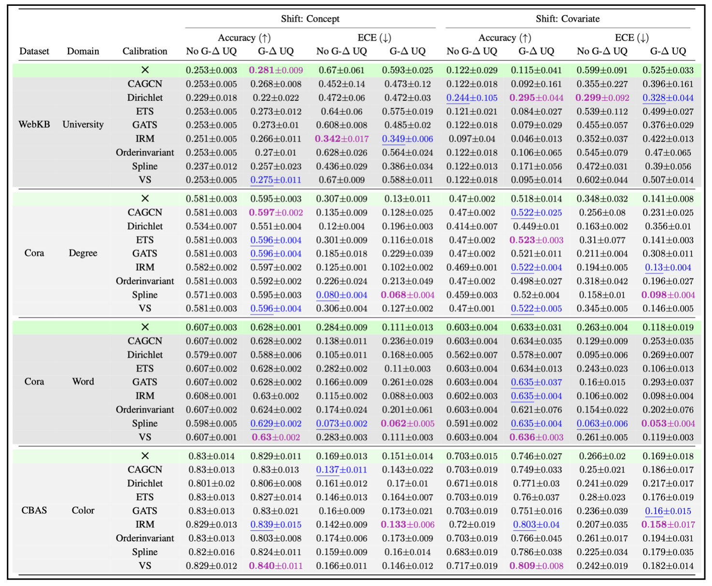

Abstract
While graph neural networks (GNNs) are widely used for node and graph representation learning tasks, the reliability of GNN uncertainty estimates under distribution shifts remains relatively under-explored. Even post-hoc calibration strategies that can improve in-distribution calibration, are not guaranteed to be effective under distribution shift. However, techniques that produce GNNs with better intrinsic uncertainty estimates are particularly valuable, as they can always be combined with post-hoc strategies later. Therefore, in this work, we propose G-ΔUQ, a novel training framework designed to improve intrinsic GNN uncertainty estimates. Our framework adapts the principle of stochastic data centering to graph data through novel graph anchoring strategies, and is able to support partially stochastic GNNs. While the prevalent wisdom is that fully stochastic networks are necessary to obtain reliable estimates, we find that the functional diversity induced by our anchoring strategies when sampling hypotheses renders this unnecessary and allows us to support G-ΔUQ on pretrained models. Indeed, through extensive evaluation under covariate, concept and graph size shifts, we show that G-ΔUQ leads to better calibrated GNNs for node and graph classification. Further, it also improves performance on safety evaluation protocols such as out-of-distribution detection and generalization gap estimation. Overall, our work provides insights into uncertainty estimation for GNNs, and demonstrates the utility of G-ΔUQ.
G-ΔUQ: Introducing Stochastic Centering for Graphs!
We introduce G-ΔUQ, a novel training protocol for graph neural networks that supports reliable epistemic uncertainty estimates. Notably, by leveraging stochastic centering, G-ΔUQ is:- Scalable and Lightweight.
- Robust to Distribution Shifts.
- Supports Pretrained Models.
- Easy to Implement.
What is Epistemic Uncertainty?
Given finite data, there are many potential functions (hypotheses) that a model can validly fit. Epistemic uncertainty arises from the lack of knowledge of which hypothesis best aligns with the data. Variability over different hypotheses can be interpreted as the model's uncertainty. For example, Deep Ensembles trains multiple independent models and uses the variance over these models as reliable uncertainty estimates.
What is Stochastic Centering?
Stochastic centering is a mechanism for sampling multiple functions from a single model by exploiting the neural tangent kernel's lack of shift invariance. Building upon this observation, Thiagarajan et al. demonstrated that by shifting the input with constant bias, the model can learn slightly different fitted functions, where the variance over these functions reliably estimates epistemic uncertainty. Since trivial transformations are sufficient for inducing different functions, it is possible to train single neural network by randomizing the transformation during training and then marginalizing out the effect of the biases during inference.
Thiagarajan et al. introduced ΔUQ as a simple but effective training protocol for creating stochastically centered image models (CNNs, transformers) by representing the input as relative representation. Namely, an input image, X, is represented as the concatenation of another image (anchor), C, and the residual, [X-C]. The model is trained on the relative input: [X-C,C], where C is randomized during training.
Anchoring, and Centering, and Graphs, Oh my!
While stochastic centering has improved calibration and generalization under distribution shift, there are several challenges that must be addressed before applying it to graph data. Namely, while input space transformations, which induce fully stochastic models, were sufficient for sampling diverse functional hypotheses from vision models, it is (i) non-trivial to define such transformations when working with variable sized, discrete graph data and (ii) unclear whether full stochasticity is in fact needed in message passing models.
To this end, we explore three different anchoring strategies that induce different levels of stochasticity, balancing the overall "amount" of diversity, and "effective" or functional diversity of the anchoring distribution. All of these strategies are easy to implement, and some can be used directly with pretrained models!
- Node Feature Anchoring: induces a fully stochastic model, where anchors are defined using the node features of other nodes in the graph.
- Intermediate Message Passing Layer Anchoring: induces a partially stochastic model where the anchors are defined using the hidden representations of other nodes in the batch.
- Readout Anchoring: induces a stochastic classifier, but the feature extractor is static. Notably, this anchoring strategy can easily be used with a pretrained feature extractor. Here, the anchoring distribution is defined as the representation obtained after using the READOUT.
Evaluating G-ΔUQ!
We evaluate G-ΔUQ on both node classification and graph classification datasets, on both covariate and concept shifts, on calibration, generalization, and OOD detection tasks.
G-ΔUQ improves graph classification calibration on pretrained GNNs!
G-∆UQ improves the OOD ECE over both the vanilla model and end-to-end G-∆UQ at comparable or improved OOD accuracy on 7/8 datasets. Furthermore, pretrained G-∆UQ also improves the ID ECE on all but the GOODMotif (size) datasets (6/8), where it performs comparably to the vanilla model, and maintains the ID accuracy. Overall, highlighting the benefits of both end-to-end and pretrained G-∆UQ.
G-ΔUQ improves OOD detection performance!
GΔ-UQ achieves the best OOD detection AUROC on 5/6 datasets. (It also performs well on the generalization gap prediction tasks. See paper.)
G-ΔUQ improves node classification calibration!
We evaluate G Δ-UQ with node feature anchoring on: 4 Datasets, 2 Distribution shifts and 8 Post Hoc Calibration, and find that GΔ-UQ matches or surpasses accuracy and calibration of the vanilla GNN on 8/8 datasets. When combined with post-hoc calibration techniques, G Δ-UQ achieves the best accuracy on 8/8 datasets and the best or 2nd best calibration on 8/8 datasets.


BibTeX
@inproceedings{
trivedi2024accurate,
title={Accurate and Scalable Estimation of Epistemic Uncertainty for Graph Neural Networks},
author={Puja Trivedi and Mark Heimann and Rushil Anirudh and Danai Koutra and Jayaraman J. Thiagarajan},
booktitle={The Twelfth International Conference on Learning Representations},
year={2024},
url={https://openreview.net/forum?id=ZL6yd6N1S2}
}